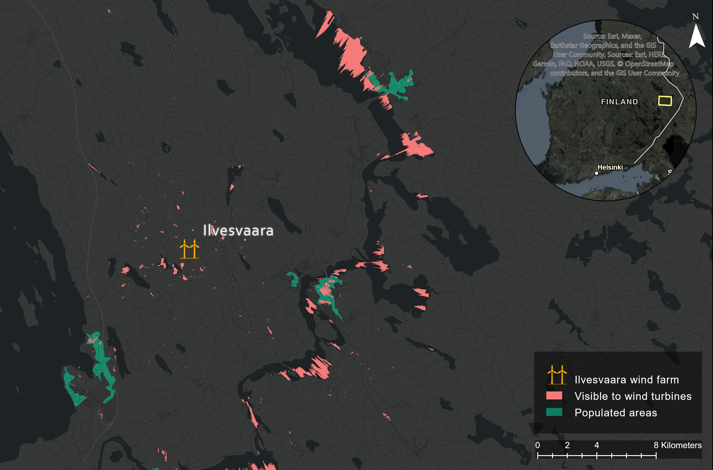

Visibility Analysis of Wind Turbines
The visibility analysis project involved creating three maps that show the surface locations from where it is possible to observe the top of the wind turbines in the Ilvesvaara, Mustavaara, and Kolvananvaara areas of Joensuu/Kontiolahti. These maps were created using GIS spatial analysis tools and techniques, and they provide valuable information that can help the wind power company to evaluate the potential environmental impact of the proposed wind farms.
One of the most important theoretical points to consider in this project is the concept of visual impact, which refers to the effect of the wind turbines on the surrounding landscape and the people who live in the area. The visual impact of wind turbines can be both positive and negative, depending on a range of factors, including the size and number of the turbines, the distance from populated areas, and the landscape context.
Pros of visual impact of wind farms include the potential to reduce greenhouse gas emissions and combat climate change, as well as the economic benefits that wind farms can provide to local communities. Wind farms can also serve as landmarks or symbols of sustainability, and they can help raise awareness about the importance of renewable energy.However, there are also several cons of visual impact of wind farms that must be considered. One of the most significant is the potential negative impact on the surrounding landscape and the visual amenity of the area. Wind turbines can be large and imposing structures that may detract from the natural beauty of the landscape, and they may also impact property values, tourism, or cultural heritage sites. The visual impact of wind turbines may also be a concern for some people who live in the area, particularly if they are located close to populated areas or areas of high visual sensitivity.
Overall, the visibility analysis project highlights the importance of considering the potential visual impact of wind farms when evaluating their environmental impact. By creating maps that show the surface locations from where the wind turbines would be visible, the wind power company can better understand the potential impact of the wind farms on the surrounding landscape and take steps to mitigate any negative effects.